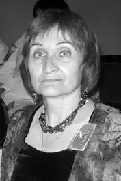

Наталія Петрівна Лапіна народилася 10.10.1953р. у м. Оха на Сахаліні. Батько був військовим медиком, службові обов'язки виконував на Далекому Сході, в Білорусії, на Півночі. Після виходу у відставку переїхав з родиною у Кременчук, понад 40 років працював лікарем швидкої реаніматологом, 2013-го родина переїхала у Черкаси. Наталія весь час була поряд з батьками, має дві вищі освіти: закінчила Черкаський, згодом – Харківський педагогічні інститути за фахом учитель російської мови та літератури, психолог. 1975-1977 учителювала на Тернопільщині, 1977-2010 працювала соціальним педагогом та психологом у Кременчуці, з 2013-го працює шкільним психологом у Черкасах.
Авторка великої кількості оповідань, критичних і методичних статей, віршованої збірки, пише пародії та фейлетони.
Має сестру, теж українську письменницю – Світлану Горбань, у співавторстві з якою видала кілька великих романів і повістей, відмічених різними літературними відзнаками. 2001-го року повість Наталії Петрівни "Тисячолітній Кременчук" перемогла у регіональному конкурсі. Член Національної спілки письменників з 2010 року.